SEKI FAMILY JOURNEY
関家の旅
AUG 3—4, 2026
DAY 1
海の京都へ
DAY 2
朝のヴィラと美山
TRAVEL TOOLS
お道具箱
ITINERARY
旅のしおり
時間、住所、移動目安をひとつに。
伊根と、夏の海。
AUG 3 · MON
TOURIST TICKET
伊根傘松観光券
幼児2人は同伴無料想定のため、購入時に窓口で確認。成相寺入山料は別途です。今回、登山バスの利用は予定していません。
購入：伊根湾めぐり日出駅（遊覧船のりば）
DEPARTURE
自宅を出発
高速へ。途中休憩1回を想定。
CRUISE · 25 MIN
伊根湾めぐり遊覧船
日出駅で伊根傘松観光券を購入・提示して乗船。舟屋を海側から眺め、カモメ動画も撮る。
京都府与謝郡伊根町字日出11LUNCH · 60 MIN
丹後の味処 山海屋
ミップル5階。天橋立を眺めながら海鮮ランチ。駐車場あり。
京都府宮津市字浜町 宮津シーサイドマートミップル5FDEPARTURE
自宅を出発
伊根へ直行。途中休憩1回。
WALK & SHOOT
伊根の舟屋散策
町並みと海を背景に家族カット。
京都府与謝郡伊根町字平田周辺LUNCH · 60 MIN
丹後の味処 山海屋
ミップル5階。天橋立を眺めながら海鮮ランチ。駐車場あり。
京都府宮津市字浜町 宮津シーサイドマートミップル5FPANORAMA
天橋立傘松公園
府中駅で観光券を提示。ケーブル／リフト往復を利用し、股のぞきと家族リアクションを撮影。14:20頃に下山開始。
京都府宮津市大垣75OUR VILLA
温泉ヴィラ
はなもみじ
ヴィラへ直行せず、フロントで鍵を受け取ってから移動。
美山、原風景へ。
AUG 4 · TUE
CHECK OUT
はなもみじを出発
忘れ物、冷蔵庫、充電器、ゴミを確認して鍵を返却。
LUNCH
ローコスト昼食
美山へ入る前に、道の駅や軽食で先に昼食を済ませる。
HOME
大阪帰着目安
車内でベストシーンと旅の感想を撮る。
住所・営業時間は公式観光情報をもとに掲載。道路状況や天候により所要時間は変動します。
LOPIA SHOPPING
買い出し
数量変更も、追加購入も。
SHOPPING PROGRESS
0 / 45ADD ITEM
追加で買うもの
VILLA DINNER
至高の
アメリカンBBQ
家族8人で味わう、ヴィラのスペシャルディナー。
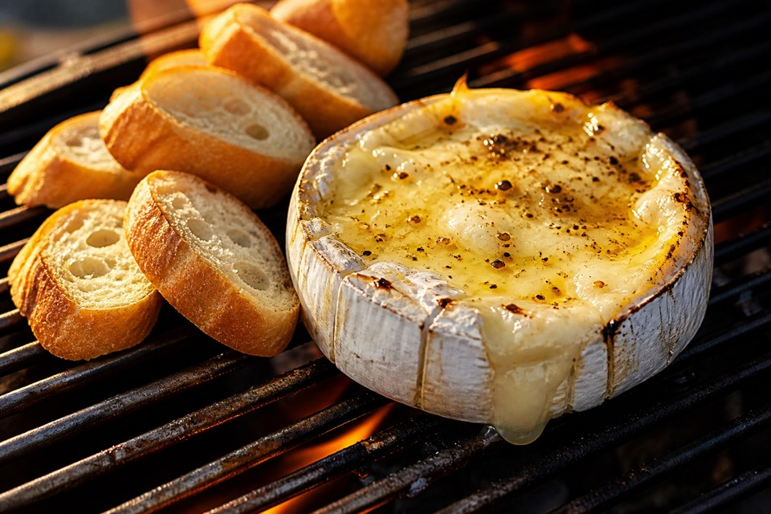
01APPETIZER
カマンベールのハニーペッパー焼き
オリーブオイル、はちみつ、ブラックペッパー。とろけたチーズをバゲットにつけて。
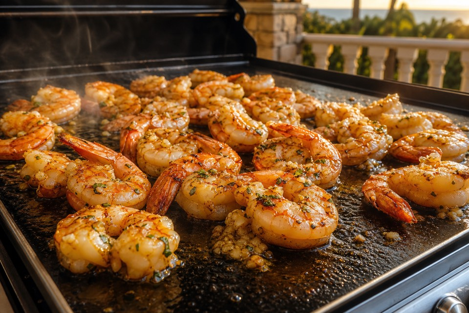
02APPETIZER
ガーリックシュリンプ
有頭エビ、にんにく、バター。立ち上がる香りからコースが始まる。
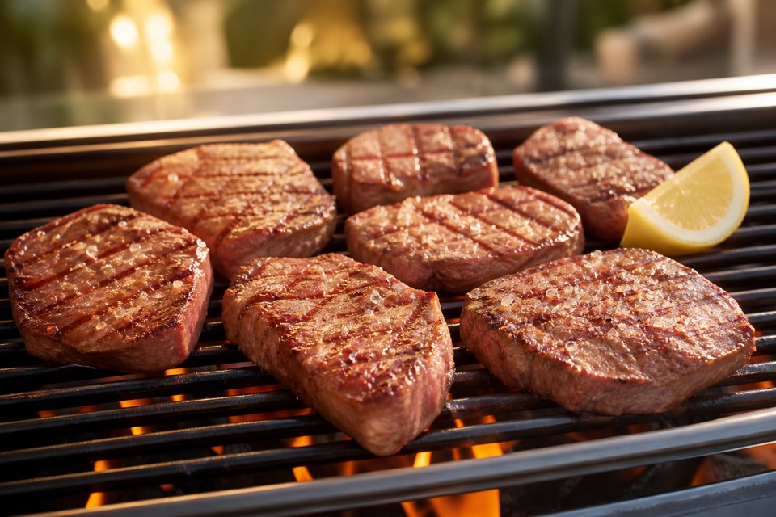
03MEAT 01
厚切り牛タン
最初は塩だけで。仕上げにレモンをひと搾り。
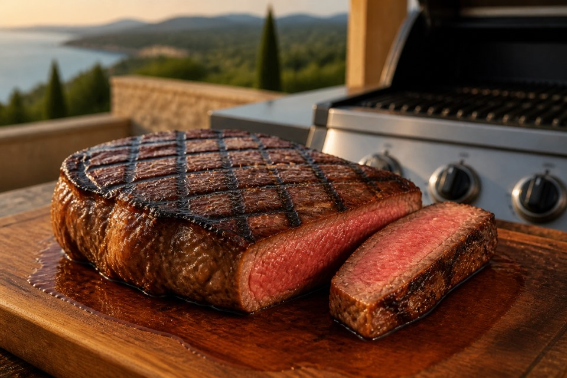
04MAIN DISH
厚切りサーロインステーキ
一枚で豪快に焼き上げ、みんなの前で切り分ける。
Broil Kingの真骨頂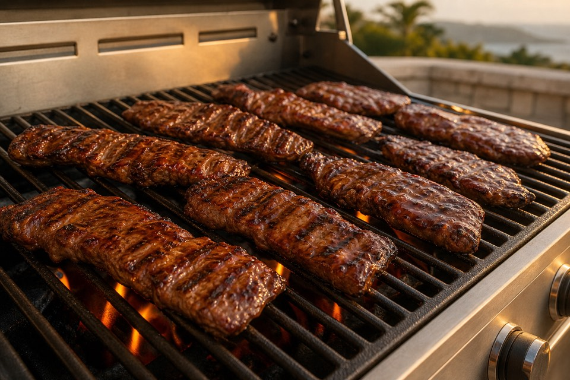
05MEAT 03
ハラミ
香ばしい焼き目とタレ。子ども人気No.1。
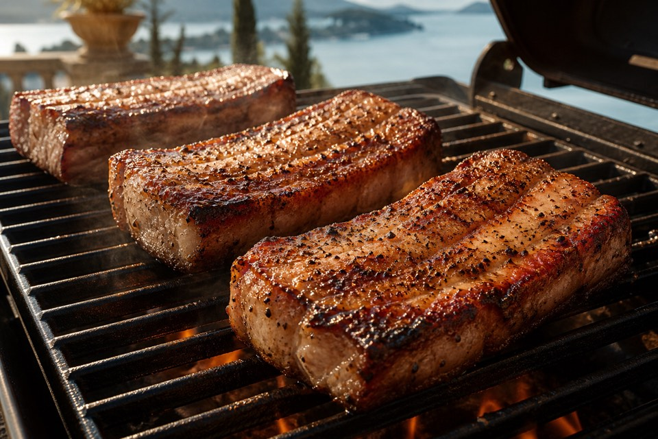
06MEAT 04
厚切り豚バラ
塩こしょうだけで、表面は香ばしく中はジューシーに。
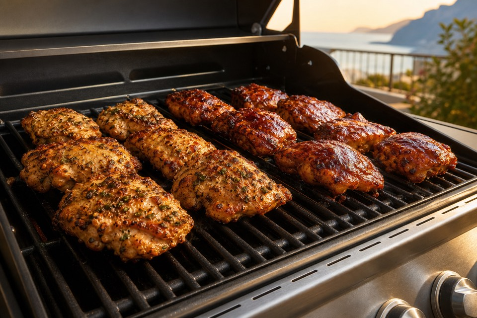
07MEAT 05
鶏ももステーキ
皮はパリパリ。最後に照り焼きソースで仕上げる。
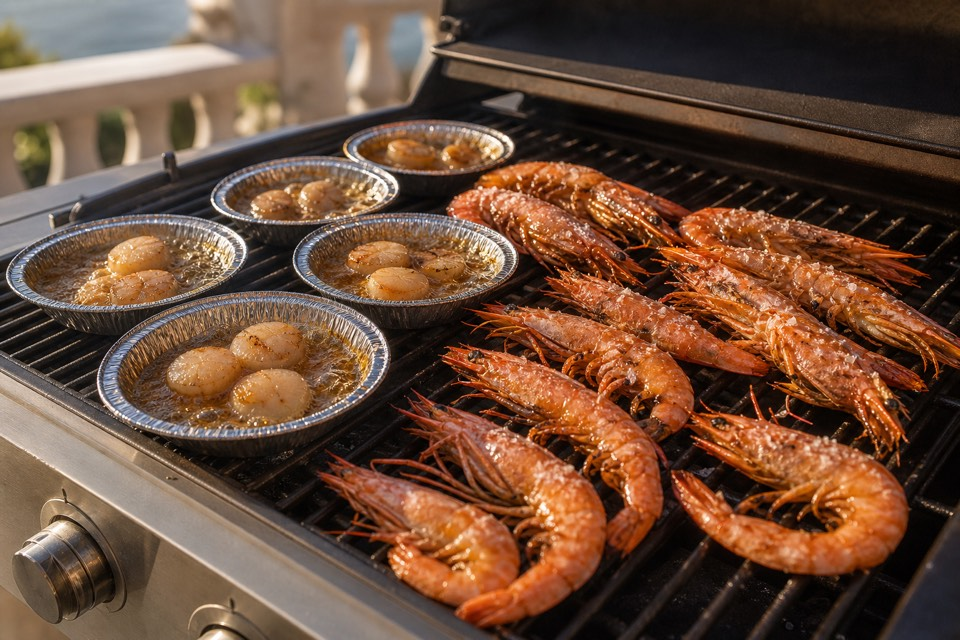
08SEAFOOD
ホタテバター醤油
殻ごと蒸し焼きにして、バターと醤油をまとわせる。
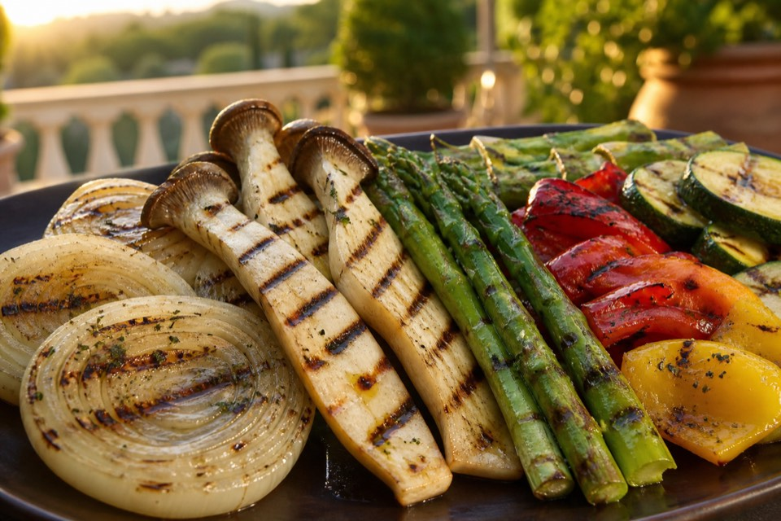
09VEGETABLES
焼き野菜
アスパラ、ズッキーニ、パプリカ、玉ねぎ、エリンギをオリーブオイルで。
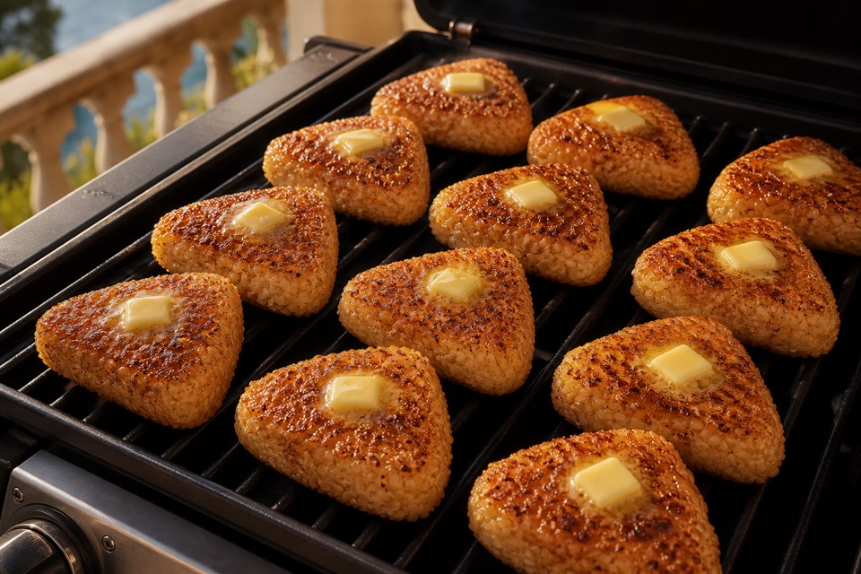
10FINISH 01
バター醤油 焼きおにぎり
醤油と溶けたバターを重ねて、香ばしく仕上げる。
FAMILY FAVORITE
大容量ソーセージ
表面はパリッと。子どもが喜ぶBBQの定番。
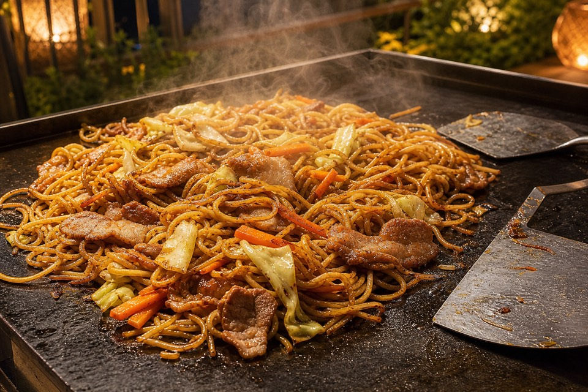
12FINISH 02
鉄板焼きそば
熱い鉄板で一気に仕上げる、コース最後のひと皿。
料理をタップすると、材料と手順が開きます。
01180℃前後 · 約10分カマンベールのハニーペッパー焼き
材料
カマンベール 1個オリーブオイルはちみつブラックペッパーバゲット
作り方
- 上面へ格子状の切れ目を入れる。
- スキレットまたはアルミ皿へ置き、オリーブオイルを少量かける。
- フタを閉め、180℃前後で約10分。
- はちみつとブラックペッパーをかけ、バゲットにつける。
02中火 · 3〜4分＋2分ガーリックシュリンプ
材料
エビにんにくバターパセリレモン
作り方
- スキレットへバターを入れ、にんにくを炒める。
- エビを入れ、フタを閉めて3〜4分。
- 裏返して2分焼く。
- パセリを散らし、レモンを絞る。
03250℃ · 2分＋1〜2分厚切り牛タン
- グリルを250℃程度まで予熱する。
- 牛タンを並べ、約2分焼く。
- 裏返して1〜2分。
- 塩とレモンで仕上げる。
焼きすぎ厳禁。
04強火→間接 · 休ませ5分厚切りサーロインステーキ
- 肉を常温に戻し、塩だけ振る。
- 強火で90秒、裏面も90秒。
- 弱火側へ移し、フタを閉めて5〜7分。
- アルミホイルで包み、5分休ませる。
- カットして、最後にブラックペッパー。
これがBroil Kingの真骨頂。
05強火 · 両面2〜3分ハラミ
- 強火で片面2〜3分。
- 裏返して2〜3分。
- 焼けてからタレを絡める。
子ども人気No.1。
06中火 · 6分＋5分厚切り豚バラ
- 塩こしょうを振る。
- 中火へ置き、フタを閉めて6分。
- 裏返し、フタを閉めて5分。
余分な脂が落ちて香ばしくなる。
07中火→間接 · 7分＋5分鶏ももステーキ
- 皮目から焼く。
- フタを閉めて7分。
- 裏返して5分。
- 最後に照り焼きソースを絡める。
皮をパリパリに。中心75℃・1分以上を目安にする。
08中火 · 5分＋30秒ホタテバター醤油
- ホタテを殻ごとグリルへ置く。
- フタを閉めて5分。
- バターと醤油を加える。
- さらに30秒加熱する。
09中火 · 約8〜10分焼き野菜
材料
アスパラズッキーニパプリカ玉ねぎエリンギ
作り方
- 野菜へオリーブオイルを薄く塗る。
- 中火で約8〜10分、時々返しながら焼く。
10中火 · 焼き目を見ながら焼きおにぎり
- まず両面を素焼きして表面を固める。
- 醤油とバターを塗る。
- さらに両面を香ばしく焼く。
焦げやすいので醤油は最後。
11中火 · 6〜8分大容量ソーセージ
- 中火で転がしながら6〜8分。
- 全体へ焼き目がつき、皮が張ったら完成。
12鉄板 · 短時間鉄板焼きそば
- 鉄板をしっかり温める。
- 具材、麺、ソースの順で加え、一気に仕上げる。
鶏肉・豚肉は中心まで十分に加熱。生肉用トングと盛り付け用を分ける。
GRILL TIMER
05:005分をセット
SHOT DIRECTOR
旅を、一本の
映画にする。
何を、どの構図で撮るか。現場で迷わない撮影指示書。
SHOOTING PROGRESS
0 / 0COMPOSITION SAMPLE
この画角をまねる
構図を見る ＋
COMPOSITION SAMPLE
この画角をまねる
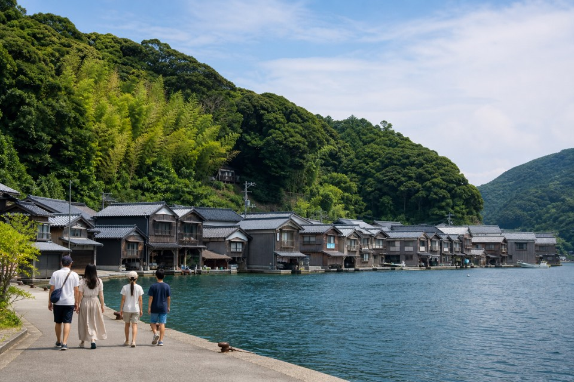
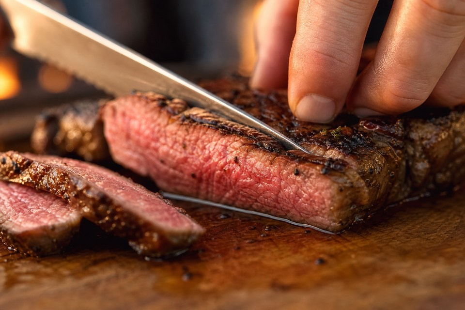
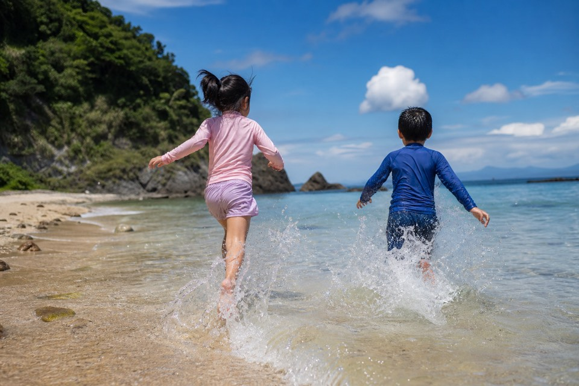
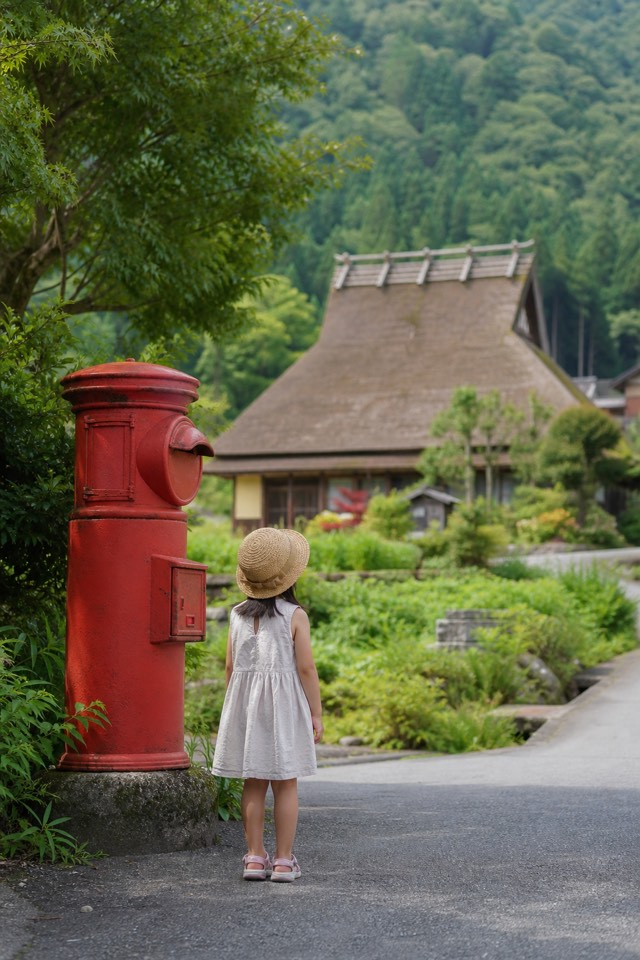
OFFLINE SAMPLES
撮影見本をオフライン保存
101枚・約2.7MB。Wi-Fi時の保存がおすすめです。
MUST絶対に撮る NICE余裕があれば BONUS撮れたら最高
KIDS QUEST
旅を遊びに
変えよう。
見つける、手伝う、笑わせる。家族でXPを集めよう。
YOUR RANK
はじめての旅人
0 / 75 ミッション
あと5個でランクアップ
RESULT
優典の記録
はじめての旅人 · 0 XP
この端末内の記録です。家族の公式結果は管理者端末で確定します。
DESTINATION GUIDE
観光地紹介
行く前に知ると、旅がもっと面白い。

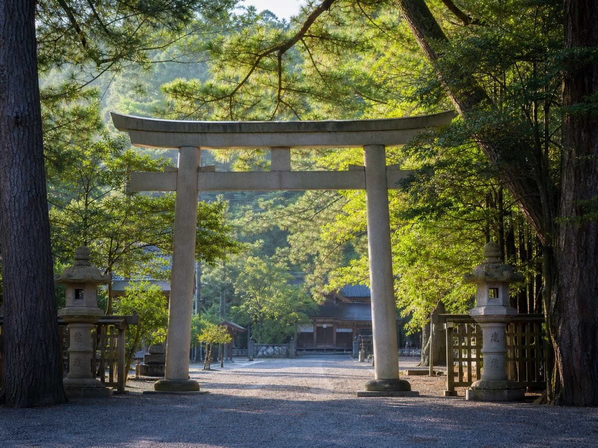
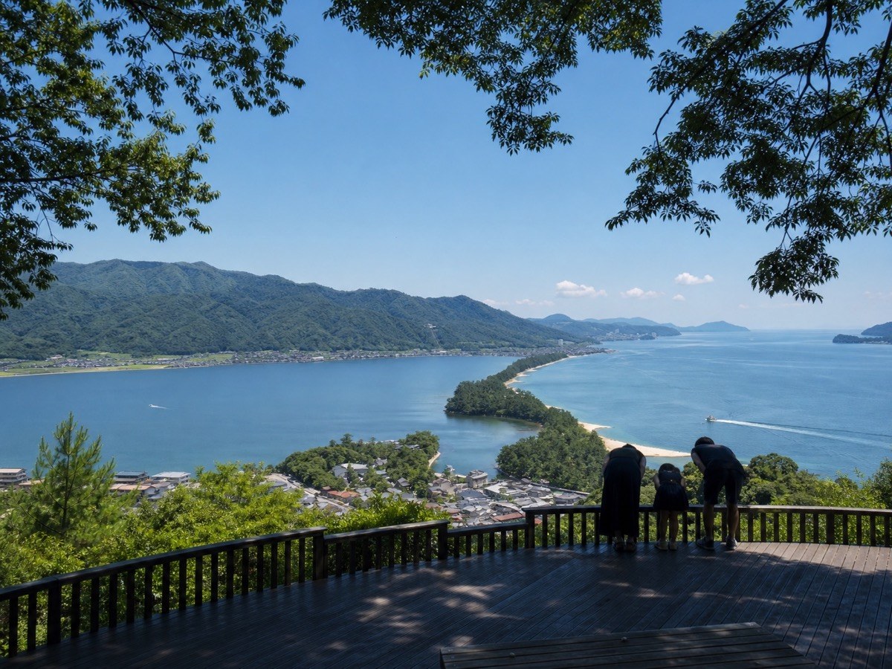
説明は各施設・観光協会の公式情報をもとに要約。掲載写真の一部は旅のイメージです。
TRAVEL TOOLS
旅の道具箱
お金、持ち物、子どものお楽しみ。
TRIP BUDGET
予定総額101,660円1人あたり 約12,708円予定費用の内訳
ADD EXPENSE
支出を記録
PACKING